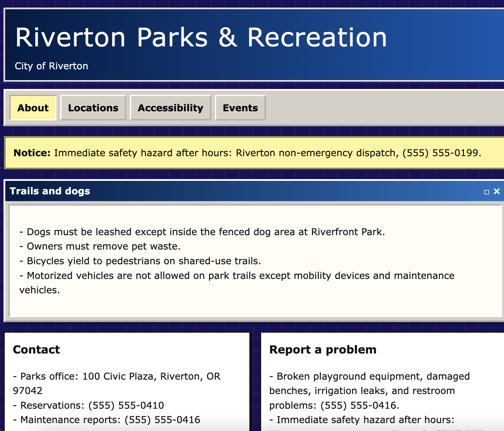

Week 1+2: Intro to Interaction Design and Web Design
Week 1
We spent the first week discussing the fundamentals of interaction design, looking at concepts like wayfinding and information architecture. We put this into practices through sketching websites and parsing through mock pages to find specific information.
Week 2
We began using HTML building blocks to create a MySpace page and a mock government website. At the end of the week we created our semester website and began updating and personalizing it.
